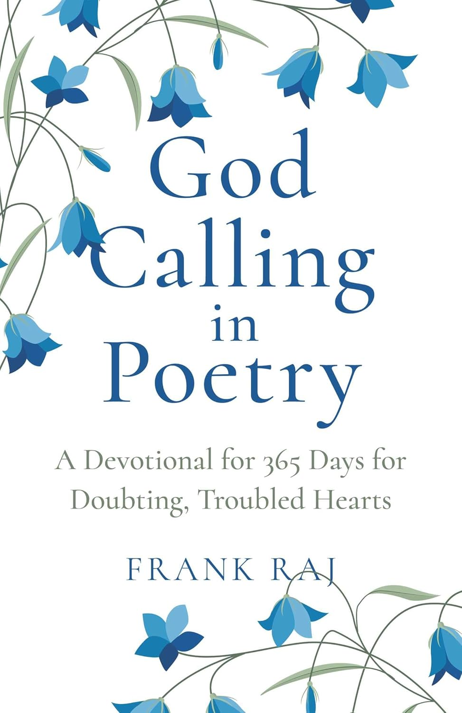

Faith
Reflections that return to trust, grace, and an attentive relationship with God.
A 365-day devotional by Frank Raj
A Devotional for 365 Days for Doubting and Troubled Hearts
A daily poetry devotional for readers seeking faith, reflection, and a deeper awareness of God’s presence.

About the book
God Calling in Poetry offers a complete year of devotional poetry for moments of doubt, spiritual longing, and renewal.
Each daily reflection creates space to pause, listen, and become more attentive to God’s presence in ordinary life.
The devotional journey
These daily readings meet the searching heart with stillness, honesty, and hope.
Reflections that return to trust, grace, and an attentive relationship with God.
Thoughtful language gives spiritual questions room to breathe and unfold.
A daily invitation to slow down, listen inwardly, and notice the sacred in everyday life.
Featured Reflection
God Calling in Poetry invites readers to slow down, listen, and rediscover a personal connection with God through daily poetic reflection.
Written as a poet’s pilgrimage, the book offers a quiet spiritual path for readers seeking faith, clarity, and a deeper awareness of God’s voice in everyday life.
Book Details
Devotional focus
These reflection themes frame the book’s devotional tone: gentleness, sincerity, spiritual searching, and quiet inner reflection.
Gentle devotional reflection rooted in faith, sincerity, and spiritual searching.
A personal devotional journey for readers moving through doubt, heaviness, or inner questions.
Poetry centered on faith, longing, spiritual clarity, and the search for God’s presence.
A year of daily reflection
More from Frank Raj
Readers who wish to explore more of Frank’s spiritual writing can continue to his broader faith platform.
Visit Christ Not ChristianityBroader spiritual platform
Time to rethink your faith?